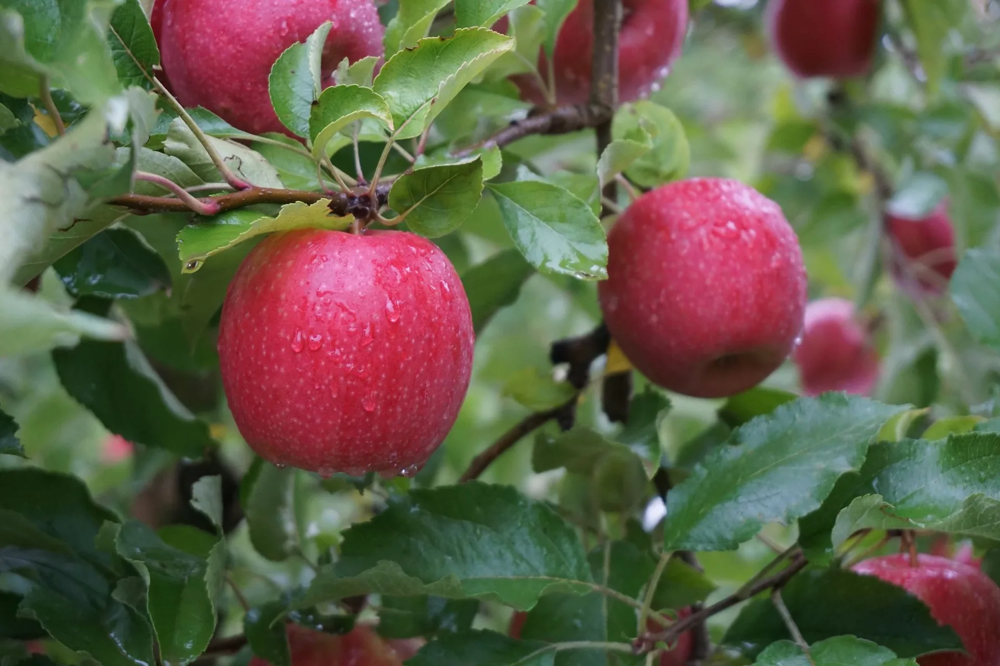
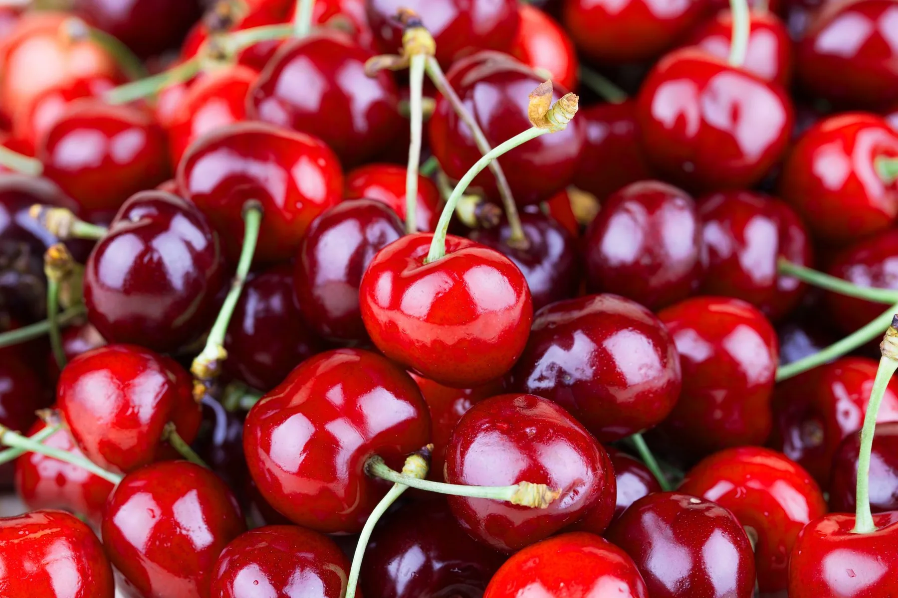
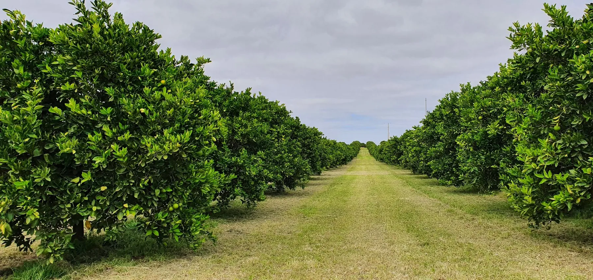
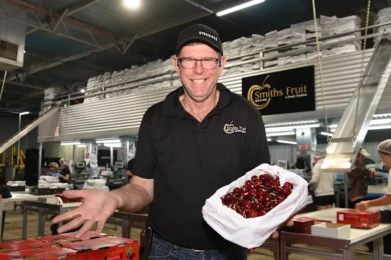

Marketable yield
The portion of the crop that reaches the intended market rather than harvested weight alone.

Fruit quality and pack-out matter alongside yield. Hybrid-Ag reviews soil, water, plant and fruit results with the block’s history to guide prescription blends and nutrition decisions through the season.
A harvest result includes the quantity picked, the grades achieved and how the fruit holds through storage and sale.
The portion of the crop that reaches the intended market rather than harvested weight alone.
Uniformity, defects and the share of fruit that meets the specification the block is targeting.
The crop and variety determine which quality measures matter, including size, firmness, colour and sugars. Growth stage affects how those results are assessed.
How fruit condition holds after harvest, through storage and sale.
We discuss the crop and how you manage the block before preparing a prescription. It needs to suit your equipment and budget.
The crop’s intended market and required fruit specification help define the prescription.
Variety, rootstock, tree age, crop load and actual growth stage provide context for interpreting the block’s results.
Soil and root-zone conditions, water source and quality, irrigation and application equipment shape what is practical in the block.
Previous applications, sample dates, field observations and harvest or pack-out information help the team assess what has changed.
Each crop has different growth stages and production requirements. The pages below explain how these shape the testing and nutrition work.

The cherry guide covers post-harvest reserves and dormancy, bud and flower development, set and cell division, then fruit development and harvest.
The Apple Playbook covers soil and water, crop load, fruit quality, storage and pack-out, with a sample Pink Lady nutrition program to review with the team.

Explore how orchard growth, fruit development and harvest timing inform the prescription. The Citrus booklet is coming.
Testing and recommendations are adapted to the crop, variety and region, taking account of the block and its quality requirements.
Growth stage affects how a test result is interpreted. Recommendations follow the stage of the trees in the block rather than a fixed calendar date. Citrus retains its canopy, and growth flushes, flowers and fruit can overlap.
The current crop is off. Review what the block showed and begin rebuilding the reserves that support the next season.
In deciduous crops, Nutrients move to storage as leaves age and fall and the trees enter dormancy.
Stored reserves support early growth before the canopy is fully working and flowering becomes the immediate focus.
Fruit number and the early cell framework are established in a narrow window where crop load matters.
Canopy, roots, water and Nutrient movement support fruit growth while the next crop is also taking shape.
Colour, sugars, firmness and condition are read against crop load, variety and the target market specification.
These questions help us relate the available results to the crop, block and season.
Establish the crop, variety or rootstock, stage, crop load and current soil, plant, water and fruit evidence.
Review previous tests and applications, changes through the season, and fruit quality and tree condition after harvest.
Agree on what needs attention now, what can wait until a later stage and what needs checking.

Conditions throughout the season help explain a harvest result. We consider the available tests and block records before recommending inputs.
Read the crop pages and sample programs above alongside your own block records. These guides explain the testing and seasonal review work.
Review yield, fruit quality and existing test results with the team before planning next season’s nutrition.
Read the post-harvest guide →Plant test results considered alongside growth stage, crop load and Nutrient demand.
Explore leaf testing →Read crop composition alongside dry matter, yield and relevant quality measures.
Explore produce testing →Keep the original report and sample details together as a useful reference for future crop nutrition decisions.
Read the sampling guide →Andrew Smith leads Hybrid-Ag’s horticulture work and brings experience from his own orchard to his agronomic advice. The wider team helps interpret test results and plan applications for the block.
Meet the horticulture team
Tell us what you are growing and share any results you already have.